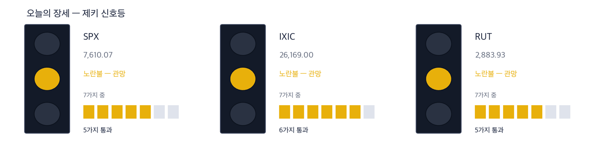
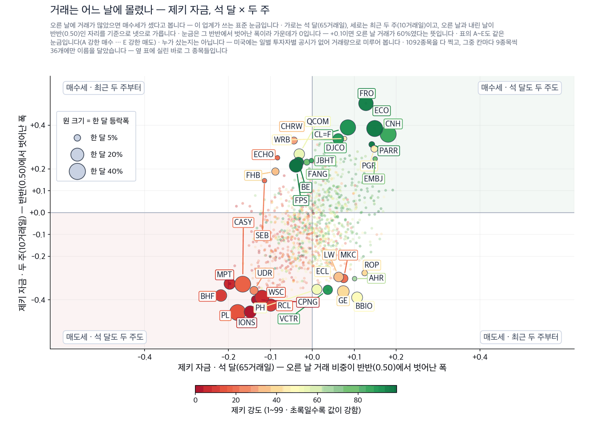

연준이 금리를 올리는 날, 답은 주식이 아니라 채권에서 나옵니다
S&P 500 7,610.04 (+0.32%) | 나스닥 26,160.71 (+0.69%) | 다우 52,068.84 (-0.05%) | 미 국채 10년물 4.965% | 제키 신호등 노란불 |

| 켜진 등 | 오늘의 국면입니다. 초록은 매수 우위, 노랑은 관망, 빨강은 매수 자제입니다. |
| 채워진 칸 | 7가지 조건 중 몇 개를 통과했는지입니다. 칸이 많이 찰수록 시장 구조가 튼튼합니다. |
| 칸이 다 찼는데 노랑·빨강이면 | 다른 이유로 한 단계 낮춘 것입니다. 그림 아래에 그 이유를 적었습니다. |
제키 신호등은 저희가 시장 국면을 7가지로 재서 하나로 줄인 것입니다. 초록불은 사기 좋은 국면, 노란불은 관망, 빨간불은 매수 자제입니다. 오늘 3개 지수가 모두 노란불입니다.
- 연준은 오늘 오후 2시(동부시간)에 금리를 올릴 것으로 보입니다. 선물시장이 보는 확률은 90%를 넘습니다. 그런데 정작 중요한 것은 인상 자체가 아니라 그 뒤 30분입니다. 케빈 워시 의장의 회견에서 장기 금리가 내려가면 시장은 안도합니다.
- 10년물 국채 금리는 어제 장중 5.02%까지 올라 19년 만의 최고였습니다. 금리를 올리는데 장기 금리가 내린다는 것은 앞뒤가 안 맞아 보입니다. 그러나 물가를 잡겠다는 약속이 믿기면 먼 미래의 물가 전망이 낮아지고, 장기 금리는 그 전망을 따라 내려갑니다.
- 저희가 오늘 값으로 살펴본 종목 4개 가운데 3개가 4가지 기준을 모두 채웠습니다. 에이피에이·시브이알에너지·센테라골드이며, 뉴몬트는 2가지에 그쳤습니다. 앞의 셋은 에너지 아니면 금입니다. 둘 다 금리가 오르면 보통 내리는 자산인데 지금은 함께 오르고 있습니다. 그 어긋남이 오늘 다이제스트의 이야기입니다.
먼저, 이번 주 경제
이번 주 숫자 하나만 외우신다면 5%입니다. 10년물 국채 금리가 그 선을 넘었습니다. 주택담보대출 금리가 7%에 다가선 것도, 소형주가 3개월 최저로 내려앉은 것도 모두 그 하나에서 나왔습니다.
| 날짜 | 무엇을 보는가 | 넘으면 어떻게 되는가 |
|---|---|---|
| 9월 16일 오후 2시 | 금리 결정과 점도표 | 올해 한 번 더 올린다고 나오면 장기 금리가 다시 오릅니다 |
| 9월 16일 오후 2시 30분 | 워시 의장 회견 | 물가를 잡겠다는 말이 믿기면 10년물 금리가 내립니다 |
| 9월 30일 | 마이크론 실적 | 인공지능 투자가 계속되는지를 반도체 쪽에서 먼저 확인할 수 있습니다 |
테마 1 · 석유 경영진이 “위기는 이미 왔다”고 말했습니다
셰브런의 마이크 워스를 비롯한 미국 석유 경영진이 세계 재고가 바닥나고 있으며 당분간 숨통이 트이지 않는다고 밝혔습니다. 행정부는 일시적이라고 봅니다. 두 시각이 정면으로 갈립니다 (월스트리트저널). 흥미로운 것은 오늘 유가가 3.17% 내려 배럴당 102.48달러라는 점입니다. 어제는 4.4% 올랐습니다. 값은 하루 단위로 출렁이지만 재고는 하루에 채워지지 않습니다. 그래서 저희는 오늘의 유가가 아니라 한 달과 석 달의 값을 봤습니다.
종가 45.33달러 · 오늘 -4.38% · 한 달 +9.0% · 석 달 +32.3% · 제키 강도 91 · 제키 자금 B 누가 미국 석유 경영진이 · 무엇을 세계 공급이 부족하다고 · 언제 9월 16일 지면에서 · 어디서 호르무즈 해협 봉쇄가 길어진 중동에서 · 왜 재고가 줄고 대체 항로가 없어서 · 어떻게 원유를 직접 캐는 회사의 판매 단가가 먼저 올라가는 경로로 이어집니다. 확인 신호 — 9월 15일 종가 45.05달러는 저희가 이 회사의 최근 바닥으로 본 자리입니다. 오늘 그 자리까지 밀렸다가 위에서 마치면 사들이는 쪽이 남아 있는 것입니다. 철회 기준 — 호르무즈 해협이 다시 열렸다는 보도가 나오면 공급 부족이라는 전제가 사라집니다. 9월 15일 종가 45.05달러를 밑돌아 마치는 날에도 근거가 사라집니다. |
종가 53.51달러 · 오늘 +2.58% · 한 달 +46.9% · 석 달 +87.6% · 제키 강도 95 · 제키 자금 A 누가 같은 경영진이 · 무엇을 연료 부족을 · 언제 같은 지면에서 · 어디서 미국 정제 설비에서 · 왜 원유는 남아도 휘발유와 경유로 바꾸는 설비가 모자라서 · 어떻게 정제 마진이 넓어져 정유사의 이익으로 바로 들어옵니다. 확인 신호 — 한 달 46.9% 상승 뒤에도 최근 두 주가 24.8%로 유지되고 있습니다. 이 두 주 상승폭이 다음 주에도 양수로 남으면 추세가 살아 있는 것입니다. 철회 기준 — 정제 마진이 좁아졌다는 실적 발표가 나오면 이야기의 근거가 사라집니다. 최근 두 주 등락이 음수로 돌아서는 것도 같은 신호입니다. |
테마 2 · 금리를 올리는 날인데 금값이 오릅니다
금은 이자를 주지 않습니다. 그래서 금리가 오르면 보통 금값은 내립니다. 오늘은 반대로 1.36% 올라 온스당 4,391.90달러입니다. 이유는 하나로 좁혀집니다. 대통령이 금리를 내리지 않으면 무역을 끊겠다고 연준을 압박하고 있습니다. 중앙은행이 정치에 밀릴 수 있다고 보면 사람들은 정부가 찍어낼 수 없는 자산을 삽니다. 금값은 금리가 아니라 그 신뢰를 재고 있습니다.
종가 22.16달러 · 오늘 +0.36% · 한 달 +1.1% · 석 달 +25.6% · 제키 강도 91 · 제키 자금 B 누가 금 채굴 회사가 · 무엇을 오른 금값을 · 언제 9월 16일 장중에 · 어디서 캐나다와 튀르키예 광산에서 · 왜 캐내는 비용은 그대로인데 파는 값만 올라서 · 어떻게 늘어난 차액이 그대로 이익으로 남는 방식으로 실적에 옵니다. 확인 신호 — 9월 16일 장중 온스당 4,391.90달러인 금값이 이 선 위에서 이번 주를 마치면 채굴사의 판매 단가 전제가 유지됩니다. 철회 기준 — 금리 인상 뒤 금값이 9월 16일 장중 값 아래로 내려 자리를 잡으면, 중앙은행 신뢰를 산다는 해석이 틀린 것입니다. |
종가 122.82달러 · 오늘 -1.10% · 한 달 +2.1% · 석 달 +13.3% · 제키 강도 76 · 제키 자금 C 누가 세계 최대 금 생산사가 · 무엇을 같은 금값 상승을 · 언제 같은 장중에 · 어디서 여러 대륙의 광산에서 · 왜 같은 이유로 · 어떻게 같은 경로로 받습니다. 다만 저희 값은 센테라골드만큼 따라오지 않았습니다. 확인 신호 — 제키 강도 76이 90 위로 올라오면 저희 기준으로 센테라골드와 같은 자리에 섭니다. 철회 기준 — 제키 자금이 석 달 기준 C에서 더 내려가면 후보에서 뺍니다. |
오늘 제외한 테마 1가지
금리 결정일에는 주식·채권·달러가 한꺼번에 출렁입니다. 그 출렁임을 중개하고 호가를 대 주는 회사들은 거래가 늘수록 법니다. 이야기는 맞아떨어집니다. 그런데 값이 따라오지 않았습니다. 마렉스그룹은 오늘 3.19% 올랐지만 최근 두 주로는 2.8% 내렸고, 버투파이낸셜은 같은 두 주에 11.1% 내렸습니다. 제키 자금으로 봐도 두 회사 모두 최근 거래가 오르는 날이 아니라 내리는 날에 몰렸습니다. 이야기가 그럴듯해도 돈이 들어오지 않았으면 저희는 종목으로 만들지 않습니다.
제외 마렉스그룹과 버투파이낸셜은 오늘 후보에서 뺍니다.
오늘 찾은 것, 한 장으로
| 테마 | 종목 | 제키 강도 | 근거의 무게 |
|---|---|---|---|
| 연료 부족 | 에이피에이 (APA) | 91 | 근거 확실 |
| 연료 부족 | 시브이알에너지 (CVI) | 95 | 근거 확실 |
| 금과 중앙은행 신뢰 | 센테라골드 (CGAU) | 91 | 근거 확실 |
| 금과 중앙은행 신뢰 | 뉴몬트 (NEM) | 76 | 확인 필요 |
| 변동성 중개 (제외) | 마렉스그룹 (MRX) | 93 | 확인 필요 |
| 변동성 중개 (제외) | 버투파이낸셜 (VIRT) | 85 | 확인 필요 |
근거의 무게 — 4가지를 세었습니다
①한 달 동안 값이 올랐는가 ②제키 강도가 90을 넘는가 ③제키 자금이 석 달 기준 A나 B인가 ④최근 두 주에 값이 꺾이지 않았는가. 충족한 수가 딱지를 정합니다 — 사람이 따로 고르지 않습니다.
| 종목 | ①값이 올랐나 | ②강도 90↑ | ③자금 석 달 A~B | ④두 주 안 꺾임 | 충족 | 근거의 무게 |
|---|---|---|---|---|---|---|
| 에이피에이 (APA) | O | O | O | O | 4/4 | 근거 확실 |
| 시브이알에너지 (CVI) | O | O | O | O | 4/4 | 근거 확실 |
| 센테라골드 (CGAU) | O | O | O | O | 4/4 | 근거 확실 |
| 뉴몬트 (NEM) | O | X | X | O | 2/4 | 확인 필요 |
| 마렉스그룹 (MRX) | X | O | X | X | 1/4 | 확인 필요 |
| 버투파이낸셜 (VIRT) | X | X | O | X | 1/4 | 확인 필요 |
돈은 어디로 갔나 — 제키 자금

| 점 하나 | 종목 하나입니다. 가로·세로 위치가 두 값을 그대로 나타내고, 가운데 가로·세로로 그어진 두 선이 기준선입니다. 네 귀퉁이의 이름표가 그 칸의 뜻입니다. |
| 점 크기 | 최근 한 달 등락폭입니다. 오르든 내리든 크게 움직였으면 큰 점입니다. |
| 점 색 | 제키 강도입니다. 초록일수록 주가가 시장에서 강합니다. |
| 30종목만 | 이름이 겹치면 못 읽기 때문입니다. 가운데 몰린 나머지는 움직임이 거의 없는 종목들이라 뺐습니다. |

| 네 칸 | 가로와 세로 두 값이 각각 기준선을 넘었는지로 넷을 가릅니다. 오른쪽 위는 둘 다 넘은 곳, 왼쪽 아래는 둘 다 못 넘은 곳, 나머지 두 칸은 한쪽만 넘은 곳입니다. 칸 이름이 그 칸에 든 종목의 상태를 한 문장으로 적어 둔 것입니다. |
| 가운데 두 칸 | 두 기간을 견주는 자리입니다. 글자 A~E가 있으면 이 업계가 쓰는 표준 등급으로, A는 강한 매수, B는 매수 우세, C는 매수와 매도가 반반, D는 매도 우세, E는 강한 매도를 뜻합니다(전체를 다섯으로 나눈 순위라 A가 상위 20%입니다). 숫자가 있으면 그 기간에 산 양에서 판 양을 뺀 것입니다. |
| 칸마다 9종목 | 그 칸에서 움직임이 가장 큰 순서입니다. 나머지는 칸 아래에 몇 종목인지만 적었습니다. 옆 산점도가 이름을 다는 종목이 바로 이 9종목씩입니다. |
| 한 달 막대 | 0을 가운데 두고 오른쪽이 상승, 왼쪽이 하락입니다. 길이는 같은 칸 안에서만 서로 견주십시오 — 칸마다 기준이 다릅니다. |
| 제키 강도 | 1~99 순위입니다. 막대가 길수록, 초록에 가까울수록 그 종목의 주가가 시장에서 강합니다. |
이것이 무엇이고 무엇이 아닌지 먼저 밝힙니다. 미국에는 한국 같은 주체별 일별 공시가 없습니다. 외국인·기관이 몇 주를 샀는지 알 수 없습니다. 잴 수 있는 것은 오른 날의 거래량과 내린 날의 거래량을 최근 13주에 걸쳐 비교한 값입니다. 0.50을 넘으면 오르는 날에 더 많이 거래됐다는 뜻입니다. 기관이 모으는지 보는 표준 방법이지만, 집계가 아니라 추정입니다.
| 종목 | 상승일 대비 거래량 | 한 달 | 기준일 |
|---|---|---|---|
| URGN | 0.69 | -12.6% | 09-16 |
| VEEV | 0.69 | +12.1% | 09-16 |
| CNH | 0.68 | +33.0% | 09-16 |
| KNSA | 0.66 | -3.3% | 09-16 |
| EBC | 0.66 | -7.7% | 09-16 |
| 종목 | 상승일 대비 거래량 | 한 달 | 기준일 |
|---|---|---|---|
| BHF | 0.29 | -11.8% | 09-16 |
| BIRK | 0.30 | -18.9% | 09-16 |
| MPT | 0.30 | -13.5% | 09-16 |
| ROL | 0.32 | -4.6% | 09-16 |
| KIM | 0.32 | -5.9% | 09-16 |
내리는데 사들이는 종목 — URGN는 0.69로 사는 쪽인데 한 달 동안 12.6% 내렸습니다. 누군가 하락의 반대편을 잡고 있습니다. 이르거나 틀렸거나 둘 중 하나인데, 이 숫자만으로는 어느 쪽인지 알 수 없습니다.
찾아낸 종목에 자금이 따라왔는가
기사와 값이 맞아떨어져도 자금은 따로 봅니다. 아래는 석 달과 최근 두 주를 나눠 잰 것입니다. 석 달이 좋은데 두 주가 나쁘면 사들이던 쪽이 멈춘 것입니다.
| 종목 | 제키 자금 석 달 | 제키 자금 두 주 | 한 달 등락 | 두 주 등락 |
|---|---|---|---|---|
| 에이피에이 (APA) | B | A | +9.0% | +2.3% |
| 시브이알에너지 (CVI) | A | A | +46.9% | +24.8% |
| 센테라골드 (CGAU) | B | A | +1.1% | +1.7% |
| 뉴몬트 (NEM) | C | B | +2.1% | +0.2% |
| 마렉스그룹 (MRX) | C | D | -1.2% | -2.8% |
| 버투파이낸셜 (VIRT) | B | E | -2.5% | -11.1% |
제키 자금은 오르는 날에 거래가 몰렸는지를 A부터 E까지로 매긴 것입니다. 지금 어느 쪽에 있는지를 보여 줄 뿐이며, 다음 한 달을 맞히지는 못합니다. 두 시장 20년 자료로 네 번 재 봤고, 네 번 모두 예측력이 없었습니다.
| 근거의 무게 | 종목 | 오름 | 내림 | S&P 500보다 나음 | 평균 초과 |
|---|---|---|---|---|---|
| 근거 확실 | 2 | 2 | 0 | 2/2 | +7.7% |
| 근거 있음 | 1 | 1 | 0 | 1/1 | +1.7% |
| 테마 제외 | 1 | 0 | 1 | 0/1 | -4.0% |
| 전체 | 4 | 3 | 1 | 3/4 | +3.3% |
장중 체크리스트
- 오후 2시 점도표 — 올해 한 번 더 올린다는 표가 몇 개인지 셉니다.
- 오후 2시 30분 회견 — 10년물 금리가 4.965%에서 어느 쪽으로 가는지 봅니다.
- 마감 30분 전 — 세 지수가 50일 평균선 위에서 끝나는지 확인합니다.
이번 주에 확인할 것
금리 결정 뒤 이틀은 되돌림이 잦습니다. 첫날 반응이 뒤집히는 일이 흔하므로, 발표 당일의 움직임 하나로 결론을 내리지 않으시는 편이 좋습니다. 9월 30일 마이크론 실적은 인공지능 투자가 계속되는지를 보여 줍니다.
이 다이제스트를 읽는 법
제키 강도는 저희가 보는 미국 상장 종목 가운데 값이 몇 등인지를 1부터 99까지로 매긴 것입니다. 제키 자금은 오르는 날에 거래가 몰렸는지를 A부터 E까지로 매긴 것입니다. 근거의 무게는 4가지 가운데 몇 가지를 충족했는지입니다. 4가지를 다 채우면 근거 확실, 3가지면 근거 있음입니다. 1~2가지면 확인 필요, 하나도 못 채우면 근거 없음입니다. 저희가 어떤 종목을 사고팔았는지는 이 다이제스트에 싣지 않습니다.
출처 — 월스트리트저널 9월 16일자 지면과 같은 날 실시간 시세, 그리고 저희 시세·수급 자료(9월 16일 장중). 기사의 사실만 가져와 저희 문장으로 다시 썼습니다.
본 리포트는 정보 제공 목적이며 개별 투자 자문이 아닙니다. ZekiRex™ Apex US는 1,000만 달러 규모의 모의 포트폴리오를 규칙 기반으로 운용합니다. 실제 계좌도, 주문도, 사고판 일도 없습니다. 표시된 성과에는 수수료와 세금, 매매 시 가격 미끄러짐이 반영되지 않았습니다. 종목 자료에는 상장폐지된 회사가 빠져 있습니다. 그래서 성과가 실제보다 높게 나오는 치우침(생존편향)이 있습니다. 과거의 성과는 미래를 보장하지 않으며, 투자에는 원금 손실 위험이 따릅니다.
모의 포트폴리오를 기준으로 한 정보이며 투자 자문이 아닙니다.
This is the Rex Way, ZekiRex™